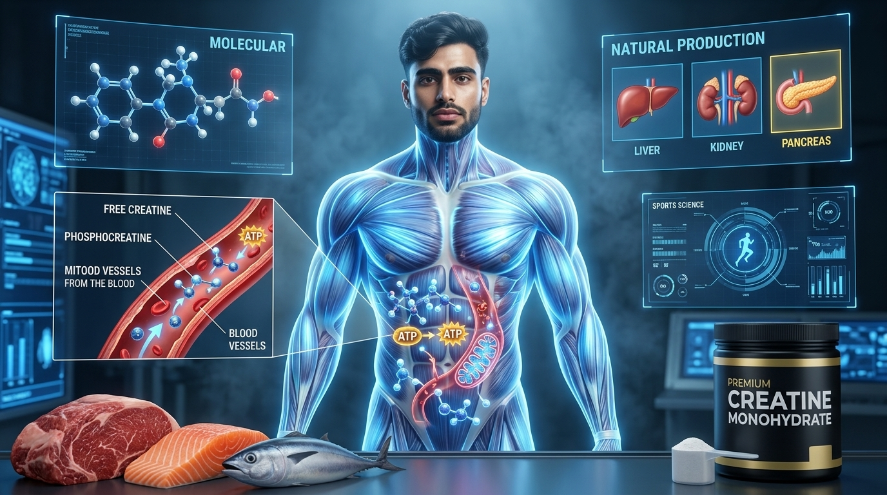
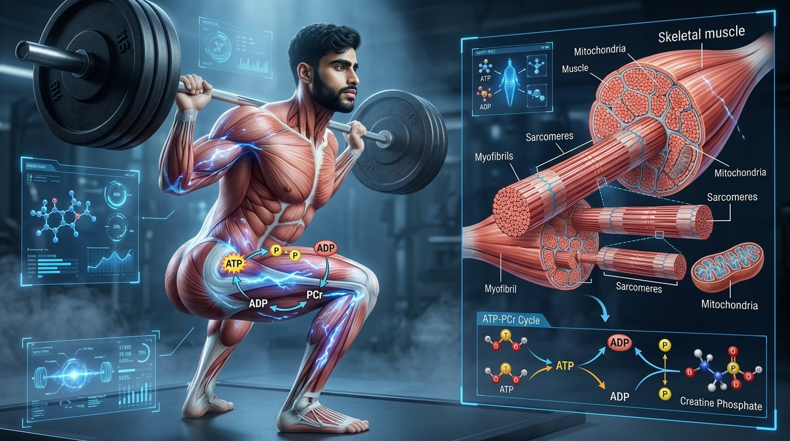
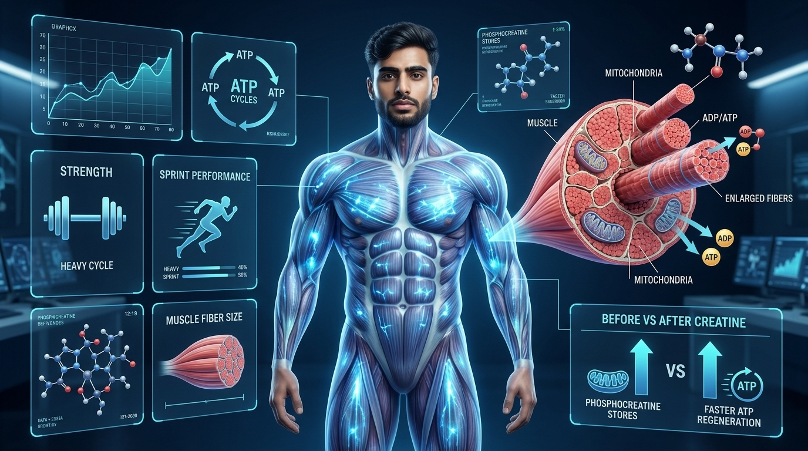
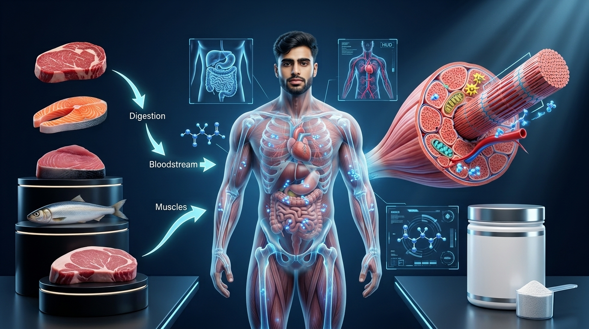
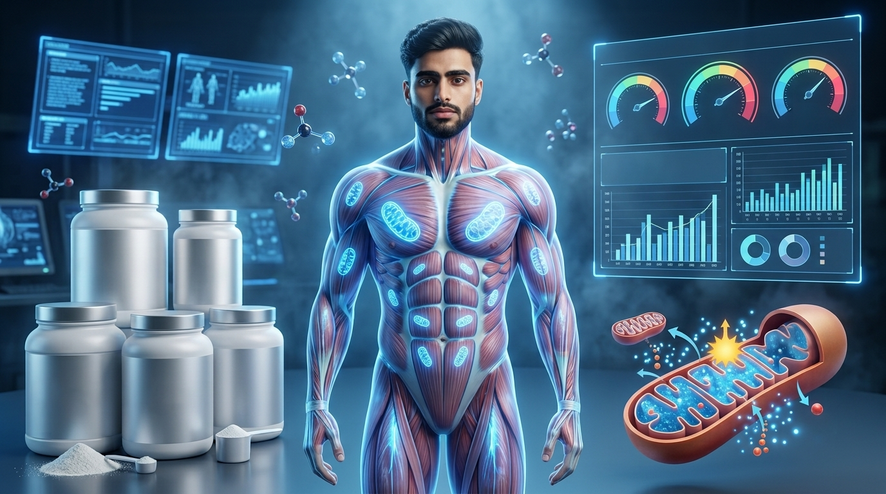
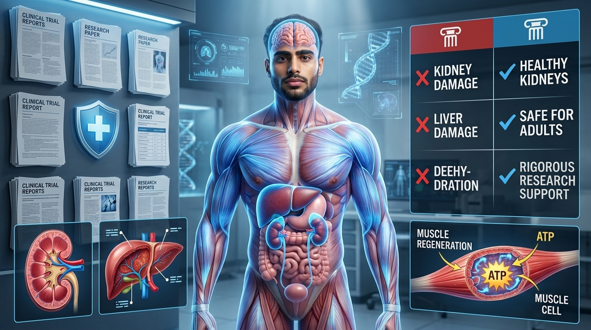
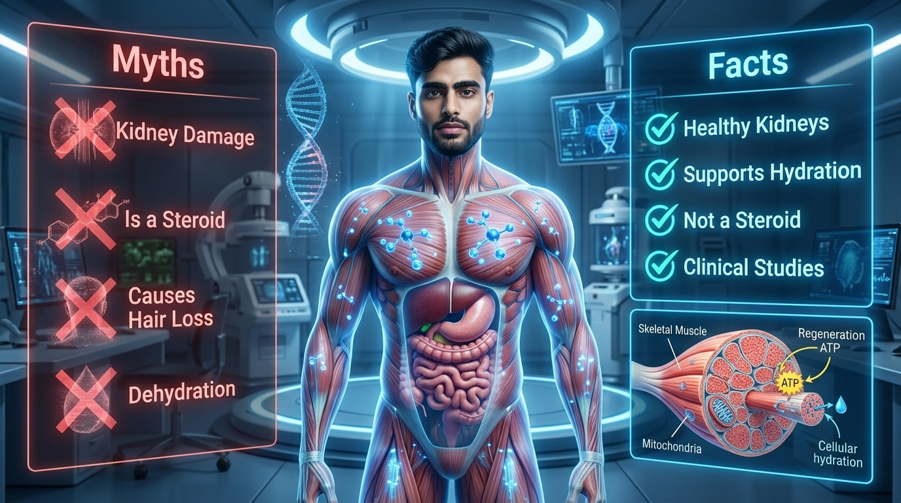

Discover everything you need to know about creatine through this complete beginner-friendly guide. Learn what creatine is, how it works inside your body, its proven benefits, food sources, supplements, dosage, safety, side effects, and the science behind one of the world's most researched sports nutrition supplements.
Beginner Friendly
Science-Based
Evidence-Based
Supplement Guide
Performance & Health
22 min read
Beginner Level
Updated July 2026
Science-Based
Evidence-Based Information
Beginner Friendly
One of the Most Researched Supplements
AT
Atul Tomar
Founder • Atul Tomar Fitness
Creating evidence-based fitness and nutrition resources that simplify exercise science and sports nutrition, helping beginners make informed decisions through practical, science-backed education.
Learning Overview
Inside This Guide
This guide explains everything you need to know about creatine—from what it is and how your body naturally produces and stores it to how it supports energy production during exercise. You'll also learn about creatine supplements, food sources, proven benefits, recommended dosage, safety, common myths, and evidence-based strategies for using creatine effectively.
What You'll Learn
By the end of this guide, you'll understand how creatine works inside the body, why it is one of the world's most researched sports nutrition supplements, and how to use it safely and effectively to support your health and fitness goals.
Understand what creatine is and how your body naturally produces and stores it.
Learn how creatine helps regenerate ATP to provide rapid energy during high-intensity exercise.
Discover the scientifically proven benefits of creatine for strength, power, muscle growth, recovery, and overall performance.
Learn about natural food sources of creatine, supplementation options, recommended dosage, and proper daily use.
Understand the latest scientific evidence regarding creatine safety, possible side effects, and who should consult a healthcare professional before supplementation.
Separate common creatine myths from evidence-based facts so you can make informed decisions with confidence.
Quick Navigation
Explore This Guide
Navigate through everything you need to know about creatine. Learn what creatine is, how it works inside your body, its proven benefits, food sources, supplementation, safety, common myths, and evidence-based recommendations for maximizing your health and exercise performance.
Introduction
Understanding Creatine and Why It Matters
Creatine is one of the most popular and scientifically researched supplements in sports nutrition, yet it is also one of the most misunderstood. Many people associate creatine only with bodybuilding or muscle growth, but its role extends far beyond the gym. Before exploring supplementation, dosage, or performance benefits, it's important to understand what creatine is, how your body naturally uses it, and why it plays such a critical role in cellular energy production.
Every movement your body performs—from standing up and climbing stairs to sprinting and lifting heavy weights—requires energy. Your muscles rely on a molecule called adenosine triphosphate (ATP), which serves as the body's immediate energy source. However, ATP stores inside muscle cells are extremely limited and can only fuel a few seconds of intense activity.
This is where creatine becomes essential. Creatine is a naturally occurring compound produced by your body and obtained from certain foods. Most of it is stored inside skeletal muscles, where it is converted into phosphocreatine. During high-intensity exercise, phosphocreatine rapidly helps regenerate ATP, allowing your muscles to continue producing force, power, and explosive movement.
Throughout this guide, you'll learn how creatine supports exercise performance, muscle growth, recovery, and overall health. You'll also explore natural food sources, supplementation strategies, recommended dosage, safety, possible side effects, and the scientific evidence that has made creatine one of the most trusted supplements available today.
Key Facts About Creatine
Natural CompoundYour body naturally produces creatine, and it is also found in foods such as meat and fish.
ATP ProductionCreatine helps regenerate ATP, providing rapid energy during short bursts of high-intensity exercise.
Muscle StorageAbout 95% of the body's creatine is stored in skeletal muscles as free creatine and phosphocreatine.
Scientific EvidenceCreatine monohydrate is one of the most extensively researched sports nutrition supplements for safety and effectiveness.
Chapter 01
What Is Creatine?
Creatine is a naturally occurring compound that plays a vital role in the production of cellular energy. Found primarily in skeletal muscles, it helps rapidly regenerate ATP—the body's immediate source of energy—allowing you to perform short bursts of high-intensity activity such as sprinting, jumping, and weightlifting. Understanding what creatine is and how your body uses it provides the foundation for understanding its health and performance benefits.
Creatine is a naturally produced nitrogen-containing compound synthesized primarily in the liver, kidneys, and pancreas from the amino acids glycine, arginine, and methionine. Although often associated with sports supplements, creatine is not an artificial substance—it is a normal component of human physiology and is present in every healthy person.
After creatine is produced or obtained through foods such as meat and fish, it is transported through the bloodstream and stored mainly inside skeletal muscles. Approximately 95% of the body's creatine is found in muscle tissue, where about two-thirds exists as phosphocreatine and the remaining one-third as free creatine. Smaller amounts are also present in the brain, heart, and other tissues that require rapid energy production.
The primary role of creatine is to help maintain the body's immediate energy supply. During short, explosive activities, phosphocreatine donates a phosphate group to regenerate ATP, allowing muscles to continue contracting at high intensity. Without this rapid energy system, muscular power would decline within just a few seconds of maximal effort.

Creatine is naturally produced by the body and stored primarily inside skeletal muscles, where it helps regenerate ATP to provide rapid energy during short bursts of intense physical activity.
Understanding Creatine Storage
Imagine creatine as your muscles' emergency energy reserve. ATP acts like a fully charged battery that powers muscle contractions, but it is quickly depleted during intense exercise. Phosphocreatine functions as a rapid charging system, instantly helping restore ATP so your muscles can continue producing force for a few more seconds.
This rapid ATP regeneration system is especially important during activities that require maximum effort, including heavy resistance training, sprinting, jumping, throwing, and other explosive movements. While creatine does not directly build muscle, it helps support the energy needed for higher-quality training sessions that can contribute to long-term strength and muscle development.
Why This Matters
Understanding what creatine actually is helps eliminate many common misconceptions. Rather than being a shortcut to fitness, creatine simply supports one of your body's natural energy systems. When combined with proper training, balanced nutrition, adequate recovery, and consistent healthy habits, it can help improve exercise performance and support long-term fitness progress.
Chapter 02
How Creatine Works Inside the Body
Creatine supports one of the body's fastest energy systems. During short, high-intensity activities, it helps rapidly regenerate ATP—the immediate source of cellular energy—allowing your muscles to continue producing force, power, and explosive movement.
Every muscle contraction requires energy from a molecule called adenosine triphosphate (ATP). Whether you're lifting a heavy barbell, sprinting, jumping, or throwing, your muscles depend on ATP to generate force. However, the amount of ATP stored inside muscle cells is extremely limited and lasts only a few seconds during maximal effort.
To maintain performance, your body must continuously regenerate ATP. This is where phosphocreatine becomes essential. Stored inside muscle cells, phosphocreatine donates one of its phosphate groups to adenosine diphosphate (ADP), rapidly converting it back into ATP. This reaction provides an almost instant supply of energy without requiring oxygen, making it the body's fastest energy-producing system.
Creatine supplementation increases the amount of phosphocreatine stored in skeletal muscles. With larger phosphocreatine stores available, muscles can regenerate ATP more efficiently during repeated high-intensity efforts, which may improve strength, power output, training volume, and overall exercise performance.

During intense exercise, phosphocreatine rapidly donates a phosphate group to regenerate ATP, allowing muscles to continue producing energy for powerful contractions.
Understanding the ATP–Phosphocreatine System
Imagine ATP as a fully charged battery that powers every muscle contraction. Once that battery releases its energy, it becomes partially discharged as ADP. Phosphocreatine acts like an ultra-fast charger, immediately restoring ATP so your muscles can continue working during explosive movements.
This energy system is most active during activities lasting approximately 5–10 seconds, including heavy resistance training, sprinting, jumping, Olympic lifting, and other high-intensity sports. After phosphocreatine stores become depleted, your body increasingly relies on glycolysis and aerobic metabolism to continue producing energy.
Why This Matters
Understanding how creatine works explains why it consistently improves performance in strength training and other explosive sports. Rather than acting as a stimulant, creatine simply enhances one of your body's natural energy systems, allowing you to perform more repetitions, maintain higher training intensity, and recover more effectively between short bouts of exercise.
Chapter 03
Benefits of Creatine
Creatine is one of the most extensively researched sports nutrition supplements in the world. Scientific studies consistently show that it can improve strength, power, exercise performance, muscle growth, and recovery while also supporting several important functions beyond skeletal muscle.
The primary benefit of creatine comes from its ability to increase phosphocreatine stores inside muscle cells. This allows your muscles to regenerate ATP more rapidly during high-intensity exercise, helping you perform more repetitions, lift heavier weights, sprint faster, and maintain higher training intensity before fatigue develops.
Over time, these improvements in training quality can contribute to greater gains in muscle strength, lean muscle mass, and athletic performance. Creatine also supports recovery between repeated bouts of intense exercise by helping restore muscle energy stores more efficiently.
Beyond sports performance, researchers continue to investigate creatine's potential role in supporting healthy aging, cognitive function, neurological health, and muscle preservation during periods of inactivity or illness. While research in these areas is still evolving, the strongest evidence remains for improving performance during resistance training and high-intensity exercise.

By increasing phosphocreatine stores inside skeletal muscles, creatine supports ATP regeneration, allowing greater strength, power output, training volume, and recovery during high-intensity exercise.
How Creatine Improves Performance
Think of creatine as increasing the capacity of your muscles' rapid energy reserve. With larger phosphocreatine stores available, your muscles can regenerate ATP more quickly between repeated contractions. This means you may complete an extra repetition, produce more force, or maintain higher power output before fatigue begins to limit performance.
Small improvements during individual training sessions accumulate over weeks and months. Consistently performing more high-quality work in the gym can lead to greater improvements in strength, muscle growth, athletic performance, and overall physical fitness compared with training alone.
Why This Matters
Understanding the real benefits of creatine helps set realistic expectations. It is not a miracle supplement, but it is one of the few supplements consistently supported by decades of scientific research. When used alongside structured training and healthy nutrition, creatine can safely enhance exercise performance and contribute to meaningful long-term fitness progress.
Chapter 04
Food Sources of Creatine
Creatine occurs naturally in several animal-based foods, particularly red meat and fish. Understanding where dietary creatine comes from and how much your body receives from food helps explain why some people choose creatine supplementation to maximize muscle creatine stores and athletic performance.
Your body obtains creatine from two primary sources: natural production inside the liver, kidneys, and pancreas, and dietary intake from foods. After digestion, creatine enters the bloodstream, travels to skeletal muscles, and is stored mainly as phosphocreatine, where it serves as a rapidly available energy reserve during high-intensity exercise.
Foods richest in creatine include beef, pork, herring, salmon, tuna, and other fish. These foods naturally contain creatine because it is stored in the muscles of animals, just as it is in humans. Poultry contains smaller amounts, while plant-based foods contain little to no creatine.
Although a balanced diet provides some creatine, the amount consumed daily is often lower than the levels used in scientific studies investigating exercise performance. For this reason, athletes, bodybuilders, vegetarians, and individuals participating in high-intensity training may choose to use creatine monohydrate supplementation to further increase muscle phosphocreatine stores.

Natural creatine from foods such as beef and fish is absorbed through digestion, transported by the bloodstream, and stored primarily inside skeletal muscles as phosphocreatine to support rapid ATP regeneration during intense exercise.
From Food to Muscle Energy
Think of creatine as a fuel reserve that your muscles continuously replenish. After eating creatine-rich foods, the nutrient is absorbed through the digestive system into the bloodstream. From there, muscle cells actively transport creatine inside, where much of it is converted into phosphocreatine and stored for future high-intensity activity.
Because plant foods contain virtually no creatine, vegetarians and vegans often begin with lower muscle creatine stores than people who regularly consume meat or fish. Supplementation can effectively increase muscle creatine levels regardless of dietary pattern, making it a practical option for many physically active individuals.
Why This Matters
Knowing which foods naturally contain creatine helps you make informed nutritional choices. While consuming meat and fish contributes to your daily creatine intake, supplementation offers a simple and well-researched way to maximize muscle phosphocreatine stores for strength training, sprinting, and other high-intensity activities.
Chapter 05
Creatine Supplements
Creatine supplements are among the most widely studied and trusted sports nutrition products available today. Learn about the different forms of creatine, why creatine monohydrate is considered the gold standard, and how to choose a safe and effective supplement for your fitness goals.
Although your body naturally produces creatine and you obtain some from food, supplementation provides a convenient way to increase muscle creatine stores beyond normal dietary intake. Decades of scientific research have consistently shown that creatine supplementation can safely improve high-intensity exercise performance, strength, and muscle development when combined with regular resistance training.
Numerous forms of creatine are marketed, including creatine monohydrate, creatine hydrochloride (HCl), buffered creatine, creatine ethyl ester, creatine nitrate, and liquid creatine. While these products often claim to offer superior absorption or effectiveness, current scientific evidence consistently supports creatine monohydrate as the most effective, affordable, and extensively researched form available.
For most healthy adults, a daily intake of approximately 3–5 grams of creatine monohydrate is sufficient to maintain elevated muscle creatine stores. Some individuals choose an optional loading phase of about 20 grams per day, divided into four servings for 5–7 days, followed by a maintenance dose. However, loading is not required, as the same muscle saturation can be achieved gradually with daily supplementation.

Although several forms of creatine are available, creatine monohydrate remains the most researched, effective, affordable, and scientifically supported option for improving muscle creatine stores and exercise performance.
Choosing the Right Creatine Supplement
Imagine different creatine supplements as different vehicles traveling to the same destination. While many products promise faster absorption or superior results, nearly all ultimately deliver creatine to your muscles. The difference is that creatine monohydrate has decades of high-quality scientific evidence confirming both its safety and effectiveness, whereas many newer forms lack comparable research.
Consistency is more important than expensive formulations. Taking a recommended daily dose of creatine monohydrate alongside regular resistance training, adequate protein intake, and a balanced diet is sufficient for most people to maximize muscle creatine stores and improve training performance over time.
When purchasing supplements, choose products that have undergone third-party quality testing whenever possible to ensure purity, accurate labeling, and freedom from contaminants.
Why This Matters
Understanding the differences between creatine supplements helps you avoid unnecessary marketing hype and make informed purchasing decisions. Choosing a well-tested creatine monohydrate supplement provides a reliable, cost-effective, and evidence-based way to support strength, muscle growth, and athletic performance without paying extra for unsupported claims.
Chapter 06
Is Creatine Safe?
Creatine is one of the most thoroughly researched dietary supplements in sports nutrition. Learn what decades of scientific evidence reveal about its safety, potential side effects, kidney health, hydration, and who should consult a healthcare professional before using creatine.
Few supplements have undergone as much scientific investigation as creatine monohydrate. Hundreds of clinical studies have consistently demonstrated that creatine is safe and well tolerated for healthy children, adolescents, adults, and older individuals when consumed at recommended dosages.
One of the most common misconceptions is that creatine damages the kidneys. Current scientific evidence does not support this claim in healthy individuals. While creatine supplementation may slightly increase blood creatinine levels—a normal breakdown product of creatine—this does not indicate kidney damage. Numerous long-term studies have found no harmful effects on kidney function in healthy people using recommended doses.
Some individuals may experience mild, temporary side effects such as stomach discomfort, bloating, or water retention during the initial stages of supplementation, particularly when using a loading phase. These effects are generally mild and often improve by dividing doses throughout the day, consuming creatine with meals, and maintaining adequate hydration.

Decades of scientific research support the safety of creatine monohydrate for healthy individuals when consumed at recommended doses alongside adequate hydration and a balanced diet.
Separating Facts from Myths
Creatine has been extensively evaluated in athletes, recreational exercisers, older adults, and clinical populations. Research consistently demonstrates that recommended daily supplementation does not harm healthy kidneys, liver function, or cardiovascular health. Most reported concerns originate from myths or misunderstandings rather than scientific evidence.
Like any dietary supplement, creatine should be used responsibly. Purchasing high-quality, third-party tested products, following recommended dosages, staying adequately hydrated, and consulting a healthcare professional when managing existing medical conditions are sensible precautions that support safe supplementation.
Individuals with pre-existing kidney disease, severe liver disease, or other significant medical conditions should seek medical advice before beginning creatine supplementation, even though evidence does not indicate harm in healthy populations.
Why This Matters
Understanding the scientific evidence behind creatine safety allows you to make informed decisions based on research rather than misinformation. Using evidence-based supplements responsibly helps maximize training performance while minimizing unnecessary concerns created by common myths circulating online.
Chapter 07
Common Creatine Myths
Creatine is surrounded by myths that often discourage people from using one of the most researched sports supplements available. Learn the scientific facts behind common misconceptions about kidney damage, dehydration, water retention, hair loss, steroids, and long-term safety.
Despite decades of scientific research supporting its safety and effectiveness, creatine continues to be misunderstood. Many claims circulating on social media and fitness forums are based on outdated information, anecdotal experiences, or misunderstandings rather than high-quality scientific evidence.
One of the most persistent myths is that creatine damages healthy kidneys. Numerous clinical studies have consistently shown that recommended doses of creatine monohydrate do not impair kidney function in healthy individuals. Similarly, research has not confirmed claims that creatine causes dehydration, muscle cramps, or serious long-term health problems when used responsibly.
Another common misconception is that creatine is an anabolic steroid. In reality, creatine is a naturally occurring compound found in your muscles and in foods such as meat and fish. Unlike anabolic steroids, creatine does not alter hormone production or artificially increase testosterone levels. Instead, it supports the body's natural ATP energy system, allowing muscles to perform more work during high-intensity exercise.

Scientific evidence consistently disproves many popular creatine myths, demonstrating that creatine monohydrate is a safe, effective, and well-researched supplement for healthy individuals.
Myth vs Scientific Evidence
Many concerns about creatine originated decades ago before large clinical studies became available. Today, researchers have examined creatine across athletes, older adults, recreational exercisers, and clinical populations, consistently confirming its safety and effectiveness when used at recommended doses.
Water retention is another frequently misunderstood topic. Creatine increases water stored inside muscle cells, where it supports cellular hydration and muscle function. This intracellular water is different from excess fluid accumulation beneath the skin and should not be confused with unhealthy bloating.
The best way to evaluate supplement claims is to rely on peer-reviewed scientific research rather than internet myths, marketing claims, or isolated personal experiences.
Why This Matters
Understanding the science behind creatine allows you to separate facts from misinformation. Making supplement decisions based on high-quality evidence helps you improve training performance confidently while avoiding unnecessary fear created by common fitness myths.
FAQs
Frequently Asked Questions
Body fat loss is one of the most searched topics in health and fitness. Here are evidence-based answers to some of the most common beginner questions about body fat, calorie deficits, metabolism, and sustainable fat loss.
01
CREATINE BASICS
What is creatine, and what does it do?
Creatine is a naturally occurring compound made from the amino acids arginine, glycine, and methionine. Your body produces creatine primarily in the liver, kidneys, and pancreas, and it is also found in foods such as red meat and fish. About 95% of the body's creatine is stored in skeletal muscles, where it helps regenerate ATP (adenosine triphosphate), the body's primary source of energy for short, high-intensity activities like weightlifting, sprinting, and jumping.
02
PERFORMANCE
How does creatine improve exercise performance?
Creatine increases the amount of phosphocreatine stored inside muscle cells. During intense exercise, phosphocreatine rapidly helps regenerate ATP, allowing your muscles to produce energy more efficiently. This can improve strength, power, sprint performance, training volume, and recovery between repeated high-intensity efforts. Over time, these benefits may contribute to greater muscle growth when combined with consistent resistance training.
03
SAFETY
Is creatine safe for healthy individuals?
Yes. Creatine monohydrate is one of the most extensively researched sports supplements available. Decades of scientific studies have consistently shown that it is safe for healthy adults when consumed at recommended doses. Most people tolerate creatine well, although some individuals may experience mild digestive discomfort or temporary water retention, particularly during a loading phase.
04
COMMON MYTH
Is creatine a steroid?
No. Creatine is not an anabolic steroid and has no hormonal effects. It is a naturally occurring compound that supports energy production inside muscle cells. Unlike anabolic steroids, creatine does not increase testosterone levels or alter hormone production. Instead, it enhances the body's ability to regenerate ATP, helping improve performance during short-duration, high-intensity exercise.
05
KIDNEY HEALTH
Does creatine damage the kidneys?
No evidence suggests that creatine damages healthy kidneys when taken at recommended doses. Research has consistently shown that creatine supplementation is safe for healthy individuals. However, people with existing kidney disease or other serious medical conditions should consult a qualified healthcare professional before using creatine or any dietary supplement.
06
WATER RETENTION
Does creatine cause water retention or bloating?
Creatine increases the amount of water stored inside muscle cells, a process known as intracellular hydration. This is different from excessive fluid accumulation under the skin. While some people may notice a small increase in body weight during the first week of supplementation, this is primarily due to increased muscle water content rather than fat gain. Many users experience little or no noticeable bloating.
07
DAILY DOSAGE
Do I need to take creatine every day?
Yes. Creatine works by gradually increasing and maintaining your muscle creatine stores. Taking 3–5 grams daily, including on rest days, helps keep these stores elevated. Consistency is more important than taking creatine only before or after workouts.
08
LOADING PHASE
Is a loading phase necessary?
No. A loading phase is optional, not required. Taking around 20 grams per day, divided into four smaller doses for 5–7 days, can saturate muscle creatine stores more quickly. However, taking 3–5 grams daily without loading will achieve similar muscle creatine levels over several weeks. Both methods are effective.
09
TIMING
When is the best time to take creatine?
The most important factor is taking creatine consistently every day. Research suggests that creatine can be taken before or after exercise, and both approaches are effective. Some studies indicate that taking creatine after resistance training may offer a slight advantage for muscle growth, but the overall difference is small compared with maintaining a consistent daily intake.
10
WHO CAN USE IT?
Can women, vegetarians, and older adults take creatine?
Yes. Creatine can benefit many different populations, including women, vegetarians, vegans, and older adults. Because vegetarians and vegans typically consume less dietary creatine, they may experience even greater improvements after supplementation. Older adults may also benefit from creatine when combined with resistance training to help maintain muscle mass, strength, and physical function.
11
SUPPLEMENTS
Which form of creatine is the best?
Creatine monohydrate is considered the gold standard because it has the strongest scientific evidence supporting its safety, effectiveness, and affordability. Although many other forms of creatine are marketed with additional claims, current research has not consistently shown them to be more effective than creatine monohydrate.
12
RESULTS
How long does it take for creatine to work?
The time depends on your supplementation strategy. With a loading phase, muscle creatine stores usually become saturated within about one week, allowing performance benefits to appear sooner. Without loading, taking 3–5 grams daily typically saturates muscle stores within three to four weeks. Once muscle creatine levels are fully increased, improvements in strength and high-intensity exercise performance become more noticeable.
Chapter 09
Key Takeaways
Review the most important concepts from this guide and reinforce the science behind creatine, including how it works, its proven benefits, recommended dosage, safety, and the evidence that makes it one of the most trusted sports nutrition supplements available today.
Throughout this guide, you've learned that creatine is a naturally occurring compound found in your body and in foods such as meat and fish. Its primary role is to help regenerate ATP, the body's immediate source of energy during short, high-intensity activities. By increasing muscle phosphocreatine stores, creatine helps improve strength, power, exercise performance, and training capacity, making it one of the most effective and well-researched dietary supplements available.
Scientific research consistently demonstrates that creatine monohydrate is both safe and effective for healthy individuals when consumed at recommended doses. Despite common misconceptions, creatine is not an anabolic steroid, does not build muscle without training, and has not been shown to damage healthy kidneys. Its benefits are supported by decades of high-quality research across athletes, recreational exercisers, vegetarians, older adults, and many other populations.
The key lessons below summarize the most important concepts covered throughout this guide. Use them as practical reminders whenever you choose a supplement, plan your training program, or evaluate nutrition advice online. Understanding the science behind creatine will help you separate evidence-based information from myths and make informed decisions that support your long-term health and performance.
Creatine supports ATP regeneration, improves high-intensity exercise performance, enhances strength and muscle development, and remains one of the safest and most extensively researched sports nutrition supplements available.
Bringing Everything Together
Creatine works by increasing the amount of phosphocreatine stored inside your muscles, allowing your body to regenerate ATP more rapidly during short, high-intensity exercise. Because ATP is the primary energy source for explosive movements, higher phosphocreatine stores help delay fatigue, improve training performance, and support repeated bouts of intense activity.
While creatine does not directly build muscle, it enables you to train harder, lift heavier weights, perform more repetitions, and recover more effectively between sets. Over time, these improvements in training quality contribute to greater increases in muscle strength, lean muscle mass, and athletic performance when combined with progressive resistance training and adequate nutrition.
Decades of scientific research have consistently shown that creatine monohydrate is safe, effective, and affordable for healthy individuals. Rather than relying on marketing claims or common myths, choosing evidence-based supplementation alongside proper training, balanced nutrition, sufficient sleep, and consistent healthy habits provides the greatest long-term benefits for both performance and overall health.
Why This Matters
Understanding how creatine works allows you to make informed decisions based on scientific evidence rather than misinformation. By recognizing its role in cellular energy production, following recommended dosage guidelines, and combining supplementation with consistent resistance training, balanced nutrition, quality sleep, and progressive exercise, you can safely maximize performance, support muscle development, and improve long-term training results.
Continue Your Health & Fitness Journey
You've Completed The Complete Guide to Creatine
Congratulations on completing this guide. You now understand what creatine is, how it supports ATP production, its scientifically proven benefits, recommended dosage, safety, common myths, and why it remains one of the most effective and extensively researched sports nutrition supplements available.
Creatine is not a shortcut to success—it is a scientifically validated tool that supports your training when combined with proper exercise, balanced nutrition, adequate recovery, and long-term consistency. Understanding the evidence behind supplementation helps you make informed decisions and avoid the misinformation that often surrounds sports nutrition.
At Atul Tomar Fitness, our mission is to simplify exercise science, nutrition, and supplementation into practical, beginner-friendly education supported by reliable scientific research. Whether you're building muscle, improving athletic performance, or simply learning how your body works, we're here to help you every step of your fitness journey.
Exercise Library
Master proper exercise technique with detailed guides covering muscles worked, execution, common mistakes, benefits, and training tips to maximize your results safely and effectively.
Calculate your daily calorie needs, protein intake, body fat percentage, BMI, lean body mass, water intake, and other important fitness metrics with our practical calculators.
Evidence-Based Learning
Every article is developed using current scientific evidence to help you understand exercise, nutrition, supplementation, and human physiology through reliable and beginner-friendly education.
Learn. Apply. Stay Consistent.
Keep Building Your Knowledge with Atul Tomar Fitness
Completing this guide is just the beginning. Continue exploring our growing collection of exercise tutorials, nutrition resources, supplement guides, fitness calculators, and evidence-based educational articles designed to help you train smarter, improve your performance, and achieve your health and fitness goals with confidence.
"Real progress comes from consistent training, balanced nutrition, and evidence-based decisions—not from chasing shortcuts or believing myths."
Thank you for reading The Complete Guide to Creatine. We hope this guide has helped you understand how creatine supports energy production, improves exercise performance, enhances muscle development, and fits into a healthy, science-based training program. Continue exploring our educational resources to strengthen your knowledge, improve your fitness, and build lifelong healthy habits backed by scientific evidence.